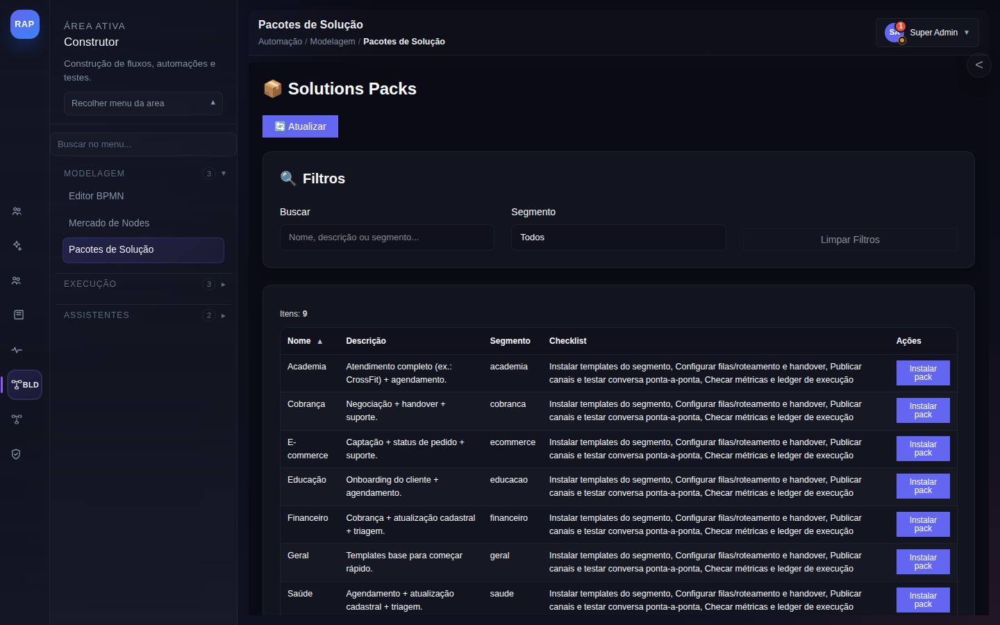

1
Ativação de Pacote de Solução
Da escolha do pacote ao fluxo em produção.
Trigger: Novo cliente contrata pacote de serviço. Operador ativa o pacote de solução pré-construído, ajusta configurações e coloca em produção.
PASSO 1
Escolher Solução
→
PASSO 2
Configurar
→
PASSO 3
Testar
→
PASSO 4
Publicar
→
PASSO 5
Monitorar

/solutions
Pacotes de Solução
Catálogo de soluções pré-construídas por caso de uso: atendimento via WhatsApp, bot de triagem, CRM integrado, relatórios automáticos. Implantação com 1 clique.
Navegar catálogo por segmento e funcionalidade
Selecionar pacote adequado ao cliente
Iniciar implantação guiada

/automations
Automações Ativas
Gerenciar automações implantadas pelo pacote de solução. Ativar, desativar, editar e monitorar execuções. Histórico de runs com métricas de performance.
Validar automações criadas pelo pacote
Ajustar parâmetros para o cliente
Ativar e monitorar primeira execução

/support
Atendimento Pós-Implantação
Suporte ao cliente após ativação da solução. Tickets de dúvidas, ajustes e melhorias. SLA definido pelo contrato de serviço.
Receber tickets do cliente via WhatsApp
Resolver ajustes de configuração
Documentar e fechar dentro do SLA

/analytics
Resultados da Solução
Relatório de performance da solução implantada: volume de atendimentos, taxa de resolução automática, ROI e comparativo antes/depois. Base para expansão do contrato.
Gerar relatório mensal de resultados
Comparar KPIs pré e pós-implantação
Apresentar ROI ao cliente para renovação
2
Gestão de Projetos de Entrega
Rastreabilidade de entregas de projetos de serviço com o cliente.
Trigger: Projeto contratado é criado na plataforma. Milestones definidos, equipe alocada e cliente acompanha progresso em tempo real.
PASSO 1
Criar Projeto
→
PASSO 2
Alocar Equipe
→
PASSO 3
Executar Tarefas
→
PASSO 4
Entrega Final
→

/crm
CRM — Conta do Cliente
Dados do cliente contratante: contatos, escopo contratado, valor e histórico de projetos anteriores. Base para todo o relacionamento durante a entrega.
Registrar dados do contrato e escopo
Vincular contatos e decisores do cliente
Registrar marcos e aprovações

/generate-system
Geração de Artefatos com IA
Para projetos de implementação, uso do gerador de IA para criar fluxos, seeds e configurações iniciais do cliente. Acelera entregas em até 80%.
Descrever contexto do cliente para IA
Gerar fluxos e configurações iniciais
Revisar e ajustar saída da IA